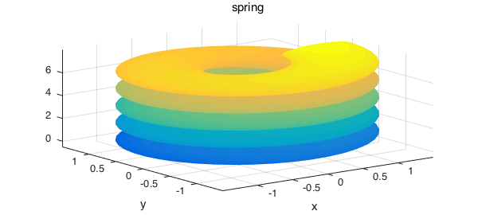

Assume that $f(x,y,z)$ is a function defined over a box $[a, b] \times [c, d] \times [e, g]$ represented by a chebfun3. Our aim is to illustrate how to use chebfun to compute the surface integral of $f$ over a 3D parametric surface. (For comparison, note that this example is a scalar analogue of the vector example http://www.chebfun.org/examples/approx3/FluxIntegral3D.html).
Consider a parametric surface $S$:
$$ S = \{ (x,y,z): x = x(u,v), y = y(u,v), z = z(u,v), u_1 \leq u \leq u_2, v_1 \leq v \leq v_2 \} $$
Such a parametric surface can be described as a Chebfub2v object. The surface integral of $f$ is
$$ \int_S f(x,y,z) ds = \int_S f(x(u,v), y(u,v), z(u,v)))\ |T_u \times T_v| \ du dv $$
where $T_u \times T_v$ is the cross product of tangent vectors $T_u$ and $T_v$.
We can use the integral2 command of Chebfun3 to compute surface integrals. To get a meaningful result, the range of $S$ must be in the domain of $f$.
To start with an easy example, let's compute the surface integral of $x^2$ over the unit sphere [p. 1082, 1]:
f = chebfun3(@(x,y,z) x.^2);
dom = [0, pi, 0, 2*pi];
S = chebfun2v(@(u,v) sin(u).*cos(v), @(u,v) sin(u).*sin(v), ...
@(u,v) cos(u), dom);
format long
I = integral2(f, S)
exact = 4*pi/3;
error = abs(I-exact)
I =
4.188790204786394
error =
3.552713678800501e-15
Next, we solve Example 6 of http://www.math24.net/surface-integrals-of-first-kind.html
f = chebfun3(@(x,y,z) sqrt(1+x.^2+y.^2), 3*[-1 1 -1 1 -1 1]); S = chebfun2v(@(u,v) u.*cos(v), @(u,v) u.*sin(v), @(u,v) v, [0 2 0 pi]); I = integral2(f, S) exact = 14*pi/3
I = 14.660765716752545 exact = 14.660765716752367
Our third example is on computing an integral over a seashell surface
S = chebfun2v(@(u,v) 5/4*(1-v/(2*pi)).*cos(2*v).*(1+cos(u)) + cos(2*v), ...
@(u,v) 5/4*(1-v/(2*pi)).*sin(2*v).*(1+cos(u)) + sin(2*v), ...
@(u,v) 10*v/(2*pi) + 5/4*(1-v/(2*pi)).*sin(u) + 15, ...
[0, 2*pi, -2*pi, 2*pi]);
surf(S), axis tight
title('seashell')
f = chebfun3(@(x,y,z) x+y+z, [-6 6 -6 6 0 25]);
I = integral2(f, S)
I =
6.030788147086102e+03
Here is integration over the surface of another seashell
S = chebfun2v(@(u,v) u.*cos(u).*(cos(v)+1), ...
@(u,v) u.*sin(u).*(cos(v)+1), ...
@(u,v) u.*sin(v) - ((u+3)/8*pi).^2 - 20, ...
[0, 13*pi, -pi, pi]);
surf(S), axis tight
title('another seashell')
f = chebfun3(@(x,y,z) x+y+z, [-100 100 -100 100 -400 0]);
I = integral2(f, S)
I =
-2.984056242788587e+07
Our last example is integration over the surface of a spring
r1 = 0.5; r2 = 0.5; t = 1.5;
S = chebfun2v(@(u,v) (1-r1*cos(v)).*cos(u), ...
@(u,v) (1-r1*cos(v)).*sin(u), ...
@(u,v) r2*(sin(v) + t*u/pi), ...
[0, 10*pi, 0, 10*pi]);
surf(S), axis tight
title('spring')
f = chebfun3(@(x,y,z) x+y+z, [-2 2 -2 2 -2 10]);
I = integral2(f, S)
exact = 1878.4483067846025004401820388947;
error = (I - exact)/exact
I =
1.878448306784605e+03
error =
1.573563547150067e-15

References
- J. Stewart, Calculus: Early Transcendentals, 6th Edition, Thomson Brooks/Cole, 2008.